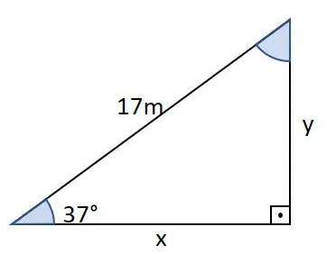
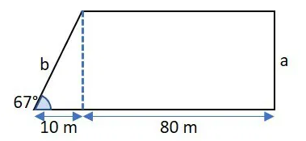
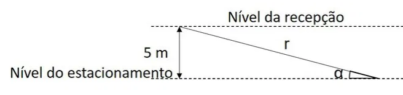
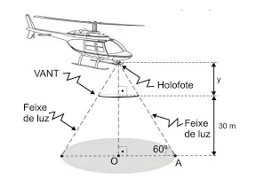

Determine os valores de x e y no triângulo a seguir. Considere sen 37º = 0,60, cosseno de 37º = 0,79 e tan 37º = 0,75.

Determine o perímetro do pentágono.
Considere:
sen 67° = 0,92
cos 67° = 0,39
tan 67° = 2,35

(Unesp 2012) Um prédio hospitalar está sendo construído em um terreno declivoso. Para otimizar a construção, o arquiteto responsável idealizou o
estacionamento no subsolo do prédio, com entrada pela rua dos fundos do terreno. A recepção do hospital está 5 metros acima do nível do estacionamento,
sendo necessária a construção de uma rampa retilínea de acesso para os pacientes com dificuldades de locomoção. A figura representa esquematicamente esta
rampa (r), ligando o ponto A, no piso da recepção, ao ponto B, no piso do estacionamento, a qual deve ter uma inclinação α mínima de 30º e máxima de 45º.
Imagem associada à questão

(EPCAR 2020) À noite, um helicóptero da Força Aérea Brasileira sobrevoa uma região plana e avista um VANT (Veículo Aéreo Não Tripulado) de forma circular e altura desprezível, com raio de 3 m estacionado paralelamente ao solo a 30 m de altura.
O VANT está a uma distância y metros de um holofote que foi instalado no helicóptero.
O feixe de luz do holofote que ultrapassa o VANT incide sobre a região plana e produz uma sombra circular de centro O e raio R.
O raio R da circunferência da sombra forma um ângulo de 60º com o feixe de luz, conforme se vê na figura seguinte.

Analisando o triângulo retângulo, com suas medidas dadas em centímetros, podemos afirmar que o valor do seno do ângulo ꞵ é igual a: